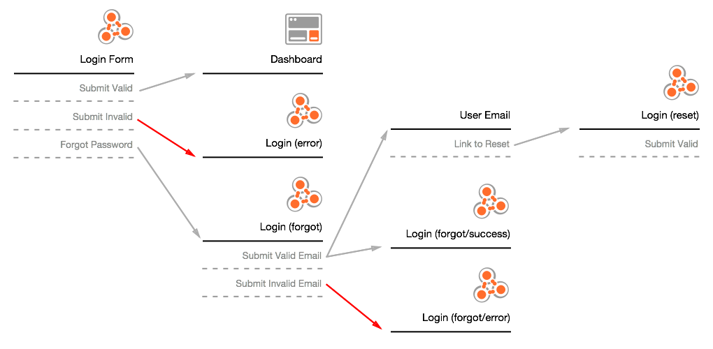

<!DOCTYPE html><html lang="en"><head><title>Tyrale Bloomfield Ux Evangelist, Designer, Director, Creative</title><link rel="stylesheet" href="https://cdnjs.cloudflare.com/ajax/libs/animsition/4.0.0/css/animsition.min.css"><link href="css/app.css" rel="stylesheet"><link rel="apple-touch-icon" href="apple-touch-icon-iphone.png"><link rel="apple-touch-startup-image" href="startup-image.png"><link rel="shortcut icon" href="../favicon.ico"><meta name="description" content="Porfolio of Tyrale Bloomfield, UX Evangelist and Designer"><meta name="viewport" content="width=device-width, initial-scale=1"><meta name="apple-mobile-web-app-capable" content="yes"><meta name="apple-mobile-web-app-status-bar-style" content="black"><script src="//code.jquery.com/jquery-1.10.2.min.js"></script><script type="text/javascript" src="js/client.js"></script><script type="text/javascript" src="//use.typekit.net/eaz2aio.js"></script><script type="text/javascript">try{Typekit.load();}catch(e){}</script></head><script async="" src="https://static.medium.com/embed.js"></script></html><body class="tk-chaparral-pro"><div class="case"><h3 class="tk-chaparral-pro">Designing a new UX process.</h3><h2 class="tk-chaparral-pro">UX Triage</h2></div><article><h4 class="tk-chaparral-pro">tl;dr</h4><p>After performing UX audits around the globe for years, a new UX process emerged with fresh tools for UX designers. This process allows teams to move faster, while providing developers information early and often. Influenced by the Atomic Design concept, UX&rsquo;ers can craft systems with the same principles & components. As designers, we should deliver compontent based systems to our friends the devs not simple screens. </p></article><div class="animage"></div><article><h4 class="tk-chaparral-pro">overview</h4><p>UX Triage is a new design process from idea to iteration. It covers how a UX&rsquo;er will guide a team through the first converstion about a feature or product, to sifting the most valuable features to the top, and provide documentation for developers within the first hour. </p><div class="medium"><h5 class="tk-chaparral-pro"><i class="icon-down"></i>Full article on medium.com<i class="icon-down"></i></h5><a data-collapsed="true" href="https://medium.com/@tyrale/ux-triage-what-i-have-learned-performing-ux-audits-around-the-globe-250266ac95a5" class="m-story">UX Triage; What I have learned performing UX Audits around the globe.</a></div><p>The process covers the happy and sad paths for a feature. It illustrates how a user interacts with a prodcut both on and off the screen. Lastly, it's ridiculously fast. This allows designers to work in pair with developers not weeks ahead. </p></article><article><h4 class="tk-chaparral-pro">problem</h4><p>;lsakdfaj;sdlkfjals;df alsd s sdflkdfl kdfs fddsfldsfk ldf ksljkl fdklf ds s</p></article><article><h4 class="tk-chaparral-pro">contraints</h4><p>;lsakdfaj;sdlkfjals;df alsd s sdflkdfl kdfs fddsfldsfk ldf ksljkl fdklf ds s</p></article><article><h4 class="tk-chaparral-pro">process</h4><p>;lsakdfaj;sdlkfjals;df alsd s sdflkdfl kdfs fddsfldsfk ldf ksljkl fdklf ds s</p></article><article><h4 class="tk-chaparral-pro">retrospective</h4><p>;lsakdfaj;sdlkfjals;df alsd s sdflkdfl kdfs fddsfldsfk ldf ksljkl fdklf ds s</p></article><div class="navigate"><div class="left">left</div><div class="right">right</div></div></body>